Префектура Хоккайдо · Сираой · айнская культура
Упопой в Сираой: национальный центр айнской культуры на берегу озера Порото
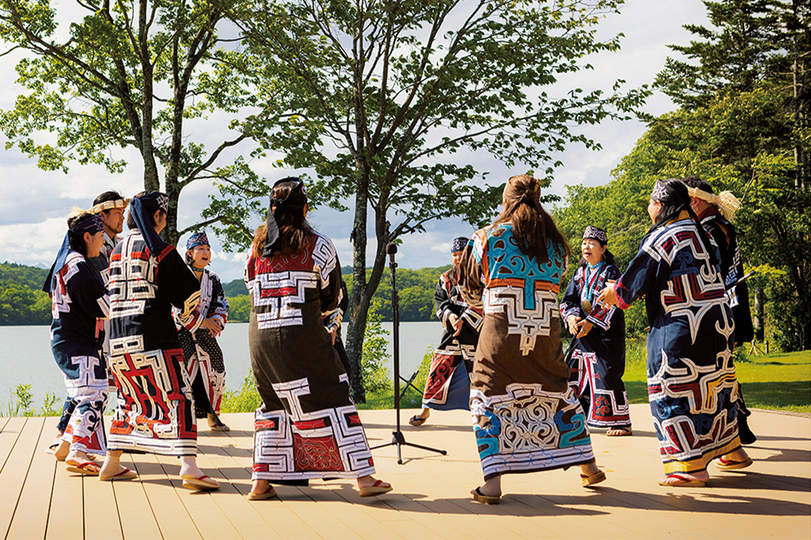
На берегу озера Порото, в сорока минутах от аэропорта Нью-Титосэ, в 2020 году открылся Упопой, национальный центр айнской культуры. Здесь коренной народ Хоккайдо рассказывает о себе сам: в музее, в деревне из традиционных домов, на сцене и в мастерских.
Центр
«Петь всем вместе»
Слово «айну» на языке айнов значит «человек». Жизнь айнов всегда шла рядом с природой: всё, что помогает человеку жить, они почитали как камуй, божеств, и старались жить с ними в согласии. Почувствовать этот взгляд на мир можно в Упопое, Национальном центре символа этнической гармонии, в городке Сираой на юге Хоккайдо.
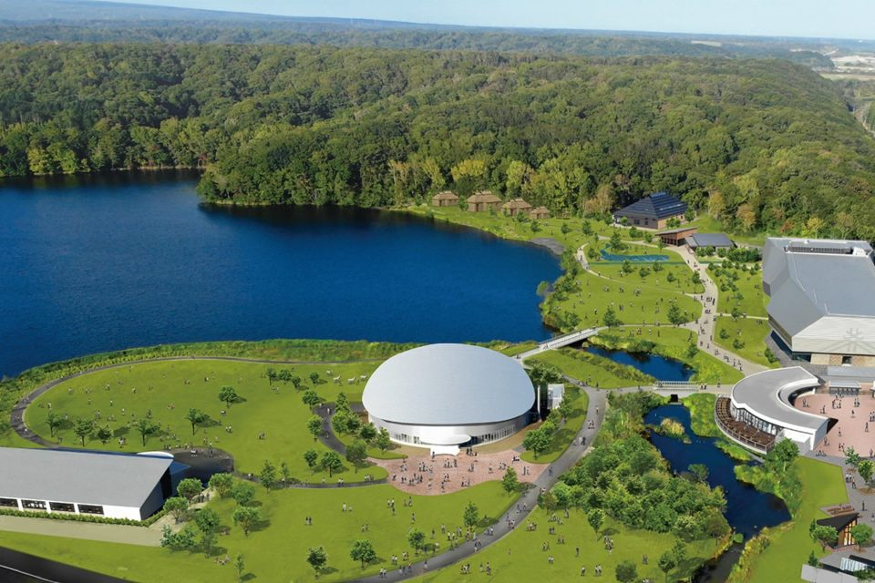
Сираой выходит к Тихому океану, вокруг много леса и воды. От аэропорта Нью-Титосэ сюда около 40 минут на машине или на скором поезде. Центр открылся 12 июля 2020 года как место, где айнская культура должна возрождаться и развиваться. Долгое время её несправедливо называли «первобытной» и «вымирающей», и она оказалась на грани исчезновения. «Упопой» по-айнски значит «петь большой компанией». Это название выбрали для пространства, где уважают достоинство коренного народа с собственным языком, историей и культурой.
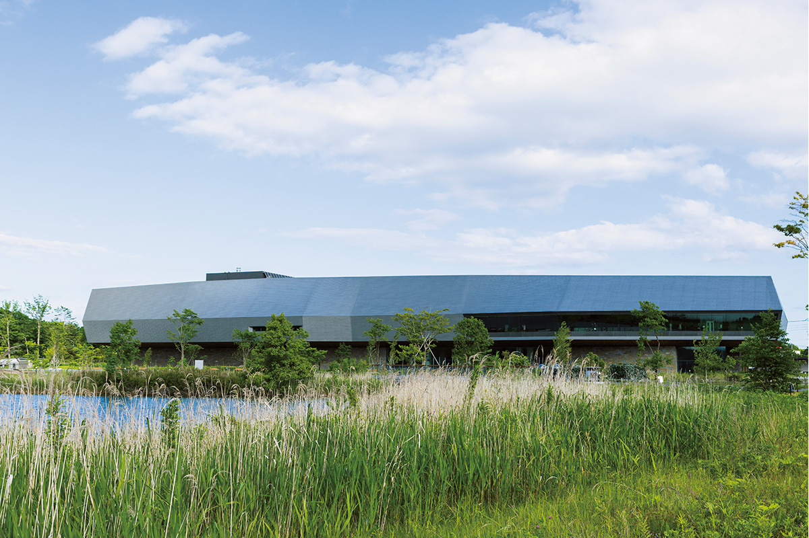
Раньше айны жили на севере Хонсю, на Хоккайдо, на Сахалине и Курильских островах. Они охотились, ловили рыбу, собирали растения, возделывали землю и торговали с соседними народами, а селились общинами, которые называли котан. Территория Упопоя раскинулась по берегу озера Порото. Кроме музея, где показывают экспозиции и фильмы, здесь есть традиционный котан с воссозданными домами тисэ, где видно, как айны жили и работали. В зале для выступлений исполняют старинные айнские танцы, охраняемые государством как важное нематериальное народное достояние, и играют на муккури, айнском варгане. В мастерских можно попробовать резьбу по дереву и вышивку.
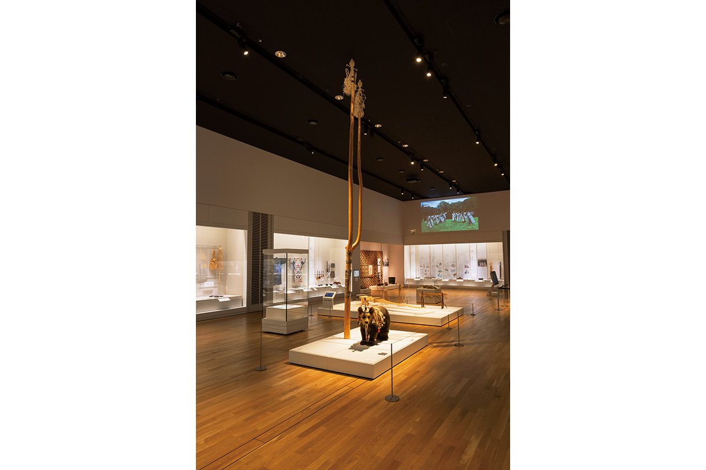
Сначала по-айнски
Главная особенность Упопоя в языке. Все указатели на территории сначала написаны по-айнски, а японский и английский идут ниже. У каждого сотрудника есть айнское прозвище, понрэ, и оно написано на его бейдже. Язык, узоры на одежде, утвари и ритуальных предметах, устные сказания, самые известные из которых эпические поэмы юкар, составляют суть айнской идентичности и вместе с тем часть разнообразия самой Японии. Это чувствуешь, даже просто гуляя по большой территории центра.
У айнов «айну», человек, противопоставлен «камуй», божествам. Камуй почитают и благодарят в молитве камуй-номи, а с песнями и танцами веселятся вместе с богами. Знакомство с этим миром учит понимать, насколько разными бывают люди и их взгляды.
Музей
Шесть тем и никакого маршрута
Музейная часть Упопоя состоит из основного зала, зала временных выставок и кинозала. Ключевое слово основного зала это «разнообразие», и шесть его разделов дают основы знаний об айнах.
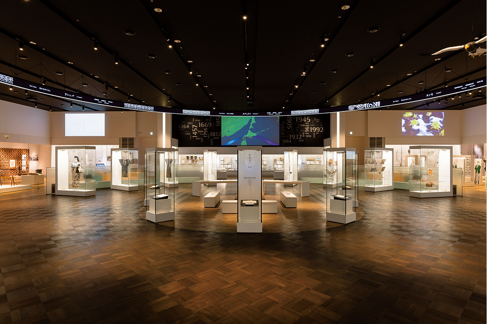
«Айны очень разные. На Хоккайдо, на Сахалине, на Курилах, в Тохоку свой язык, своя культура, свои материалы для утвари, свои обряды. Разница примерно такая же, как между Аомори и Хиросимой на Хонсю», объясняет старший научный сотрудник музея.
Чтобы показать это разнообразие, зал устроен по «принципу площади». В центре по кругу стоят 14 витрин с главными предметами шести тем: «язык», «мир», «быт», «история», «труд» и «связи с соседями». Здесь можно быстро получить общее представление об айнской культуре и её мастерстве. Если какая-то витрина зацепила, от неё можно пройти вглубь зала: темы расходятся лучами, и в глубине каждой своя подробная экспозиция.
Чтобы как следует посмотреть всё, понадобится около трёх часов.
«Если времени мало, начните с 14 витрин. Обязательного маршрута, как в большинстве музеев, у нас нет, ходите туда, куда тянет интерес. В этом многообразии и состоит взгляд айнов на мир»
старший научный сотрудник музея
Мир: благодарность всему живому
По представлениям айнов, животные, растения, вещи, а также цунами, землетрясения и эпидемии, всё, что есть в мире людей, Айну-мосири, имеет душу, рамат. Каждая душа приходит сюда из своего мира со своей задачей, а выполнив её, возвращается обратно. Чтобы проводить её с почётом, устраивали обряды с большим пиром и подарками, и чем важнее была эта сущность для жизни людей, тем торжественнее были проводы. Камуй для айнов это то, без чего нельзя прожить, и то, что сильнее человека. Поэтому их благодарят и почитают и по любому поводу обращаются к ним с молитвой.
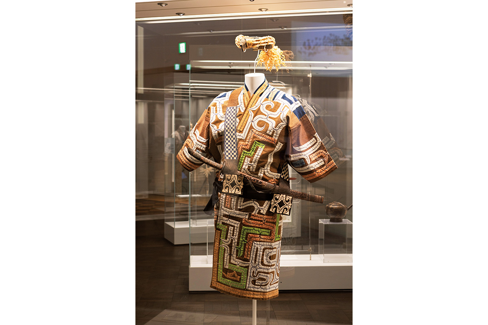
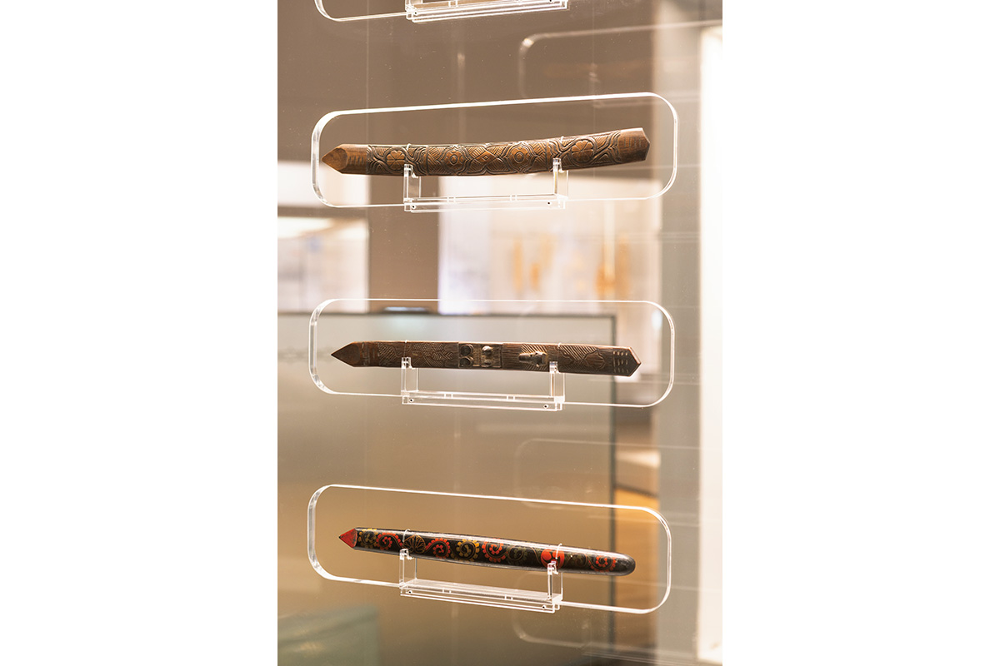
Быт: жить так, чтобы хватило и на следующий год
Дома айны строили там, где легко добыть еду и воду и не страшны стихийные бедствия, у рек и на берегу моря. Так возникали котаны. Во главе котана стоял старейшина, а люди охотились, рыбачили и собирали растения в определённых местах в горах, на реках и у моря вокруг селения. Еду брали у природы, и на это уходила большая часть времени, но у дикого растения всегда оставляли корень, чтобы оно выросло и на следующий год. К зиме мясо и рыбу сушили и коптили впрок.
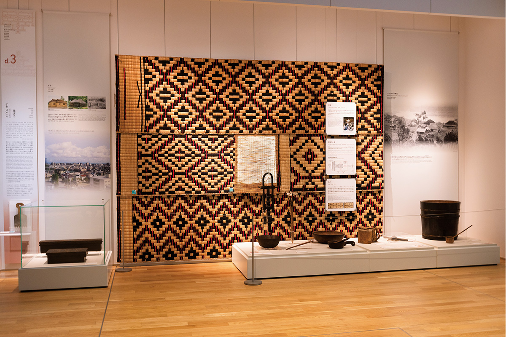
Труд: работа и жизнь вместе
Жизнь в суровой северной природе держалась на труде во все времена года: охоте, рыбалке, сборе растений. Работали, чтобы добыть еду и сделать всё необходимое для дома. Охота и рыбалка считались делом мужчин, а сбор дикоросов и ткачество делом женщин и детей. С XIX века японская политика ассимиляции отнимала у айнов земли и привычные занятия. Пройдя через эти потрясения, айны работают в самых разных профессиях в Японии и за её пределами.
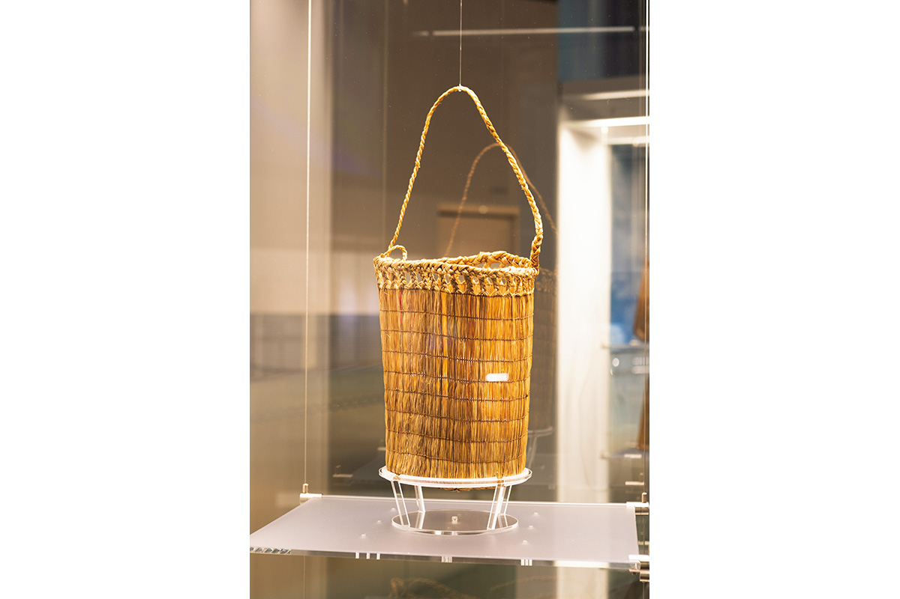
Язык: айнские слова на карте Хоккайдо
Айнский язык, на котором говорили айны Хоккайдо, Сахалина и Курил, отдельный язык, а не диалект японского. Раньше он был только устным, а для записи используют катакану, дополненную особыми знаками. Ближе всего к нему путешественник оказывается, читая карту: большинство названий на Хоккайдо записаны иероглифами или катаканой по звучанию или смыслу айнских слов. Такие названия встречаются и на Сахалине, на Курилах и в Тохоку.
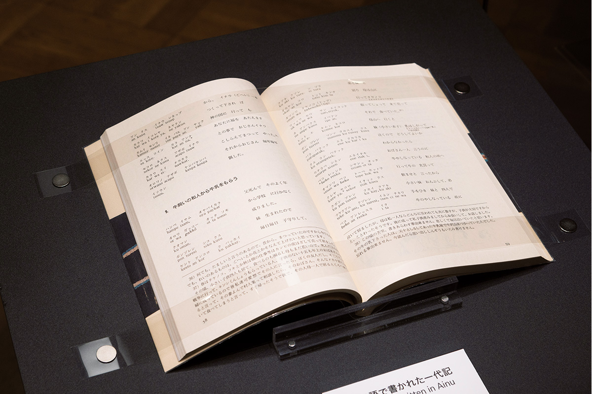
Связи: торговля с соседями
Рядом с айнами жили другие народы: на юге японцы, на севере уильта, нивхи и ульчи, на востоке ительмены и алеуты, и с ними айны активно общались. Главным товаром были меха соболя и калана, их возили на лодках в Японию, Китай и Россию. С XVIII века японские чиновники описывали айнскую культуру, а айнская одежда и ремесленные вещи высоко ценились и у японцев. В начале XX века, когда Хоккайдо стал местом для туристов, появились люди, для которых работой стал рассказ об айнской культуре.
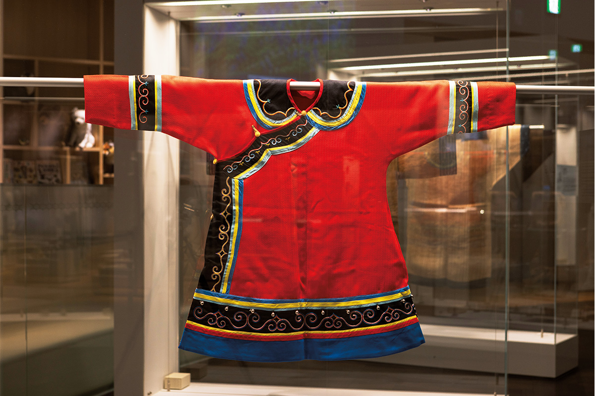
История: что нужно знать о прошлом
Хронология в зале начинается с появления людей около 30 тысяч лет назад. Айны рыбачили, охотились, собирали растения и торговали с соседями. В 1604 году княжество Мацумаэ, владевшее югом острова, получило исключительное право на торговлю с айнами. Во второй половине XIX века по землям айнов прошла граница между Японией и Россией, и айнов Сахалина и Курил насильно переселили на Хоккайдо. После войны айны Хоккайдо и Хонсю боролись против дискриминации и за лучшую жизнь.
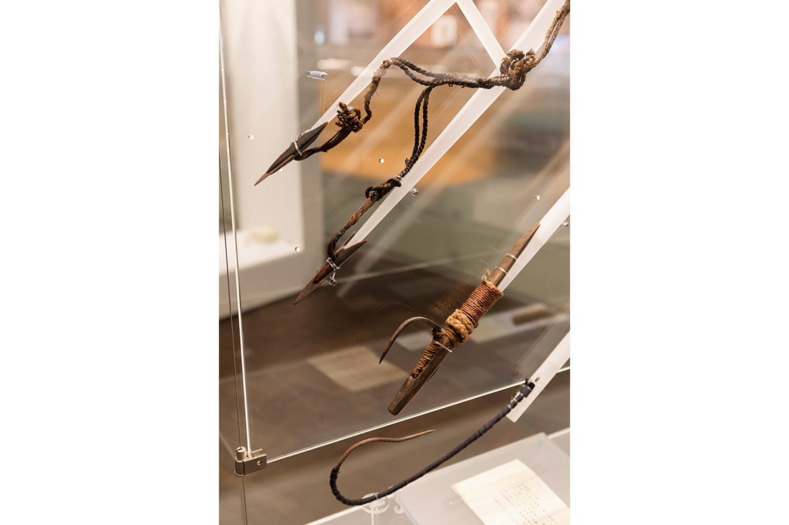
Сцена
Песни, танцы и звук варгана
Упопой интересен тем, что айнскую культуру здесь можно не только увидеть, но и потрогать и попробовать. В зале для выступлений на западной стороне озера Порото показывают песни, танцы и сказания. Видеопроекция соединяется с живым танцем, и мир айнов сразу захватывает.
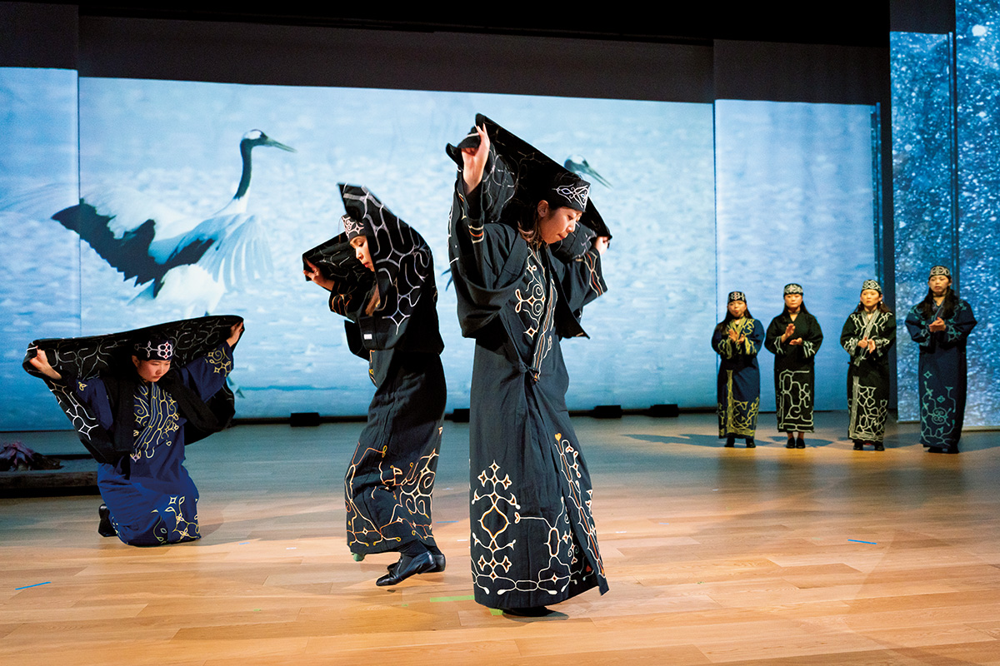
В 2022 году здесь каждый день шли две постановки: «Синот» с песнями, танцами и сказаниями в современной постановке (20 минут) и «Иноми» о молитвах, построенная вокруг традиционного обряда иёманте (30 минут). Вход был бесплатным, места распределяли по талонам в информационном центре у входа. В 2026 году песни и танцы разных областей показывают в программе «Упопо нэва римсэ», которая заменила «Синот».
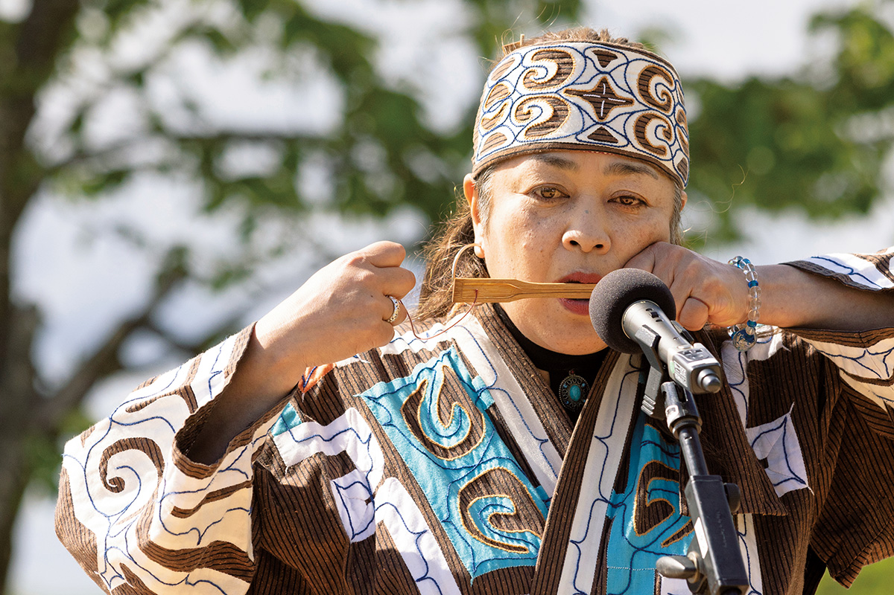
Муккури, бамбуковый варган, один из музыкальных инструментов айнов. Его звуком айны передавали голоса природы и свои чувства. В 2022 году в учебном центре «Яйханоккара-тисэ» муккури можно было сделать самому: трёхгранной и плоской стамесками бамбуковую пластинку прорезают на половину или две трети толщины, проверяют звук язычка, а когда он похож на образец, продевают шнурок. Занятие длилось 45 минут и стоило 1000 иен. В 2026 году в программе центра есть уроки игры на муккури и на струнном инструменте тонкори для начинающих.
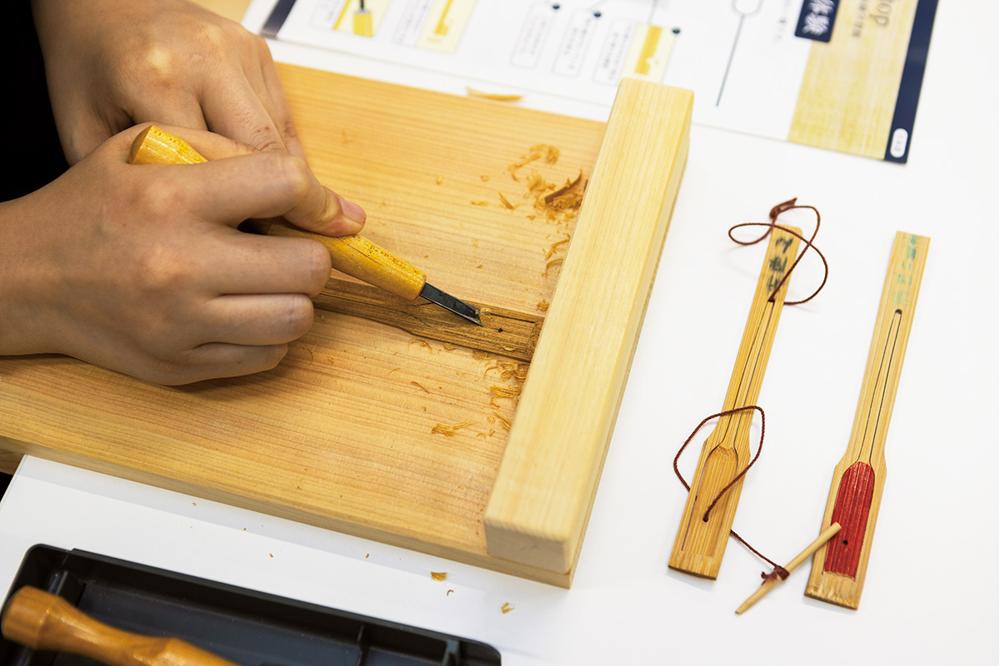
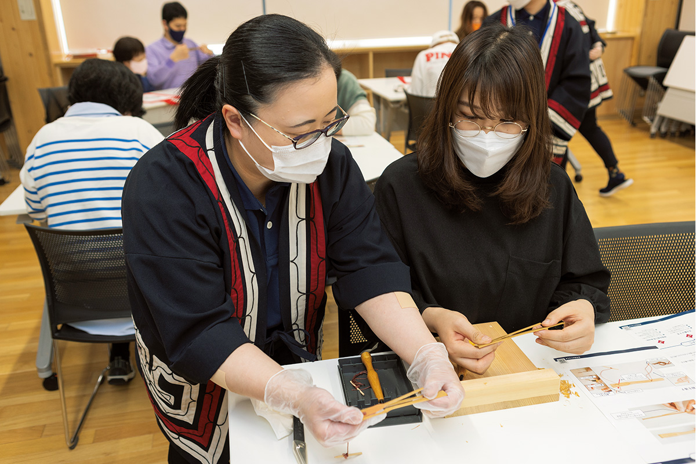
Мастерские
Резьба для мужчин, вышивка для женщин
В мастерской «Икара-уси» на восточной стороне можно самому нанести айнский узор на дерево или ткань. Одежду и всё, что нужно в хозяйстве, айны делали своими руками, и такое занятие помогает почувствовать их жизнь ближе.
Вещи из дерева айны называют «оккайкарапэ», то есть «то, что делают мужчины». Мужчины покрывали узором ножи макири, подносы ита и другую утварь. От качества вещи зависела жизнь, поэтому был и обычай: делая предложение, мужчина дарил девушке женский нож мэнокомакири. На занятии по резьбе «Инуйэан ро» в 2022 году узор вырезали на подставке для смартфона, 60 минут стоили 1500 иен.
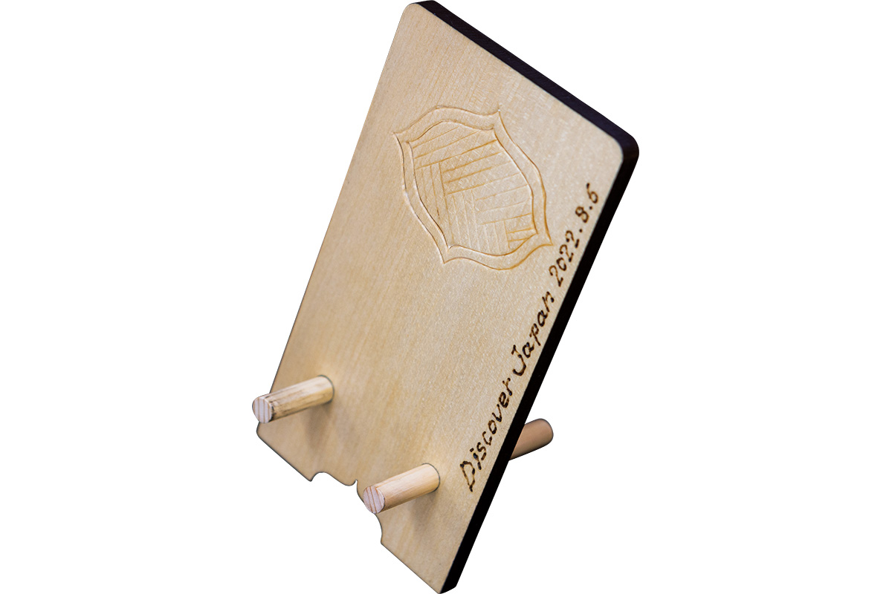
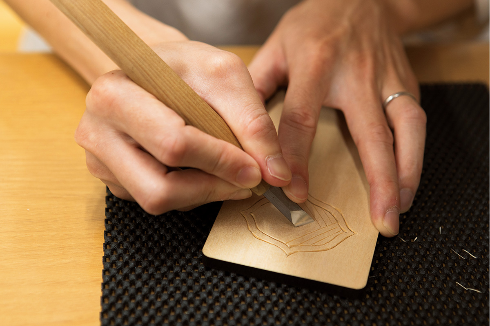
Вещи, сшитые, сотканные и сплетённые, называют «мэнококарапэ», «то, что делают женщины». Вышивка была важной женской работой: девочки смотрели, как работают родители, и учились, рисуя узоры на золе очага или на песке у моря. Сшить одежду для семьи умела каждая взрослая женщина. На занятии по вышивке «Икаракараан ро» в 2022 году узор вышивали на подставке под стакан бесплатно, а на мешочке, рамке или маске за 1000 иен.
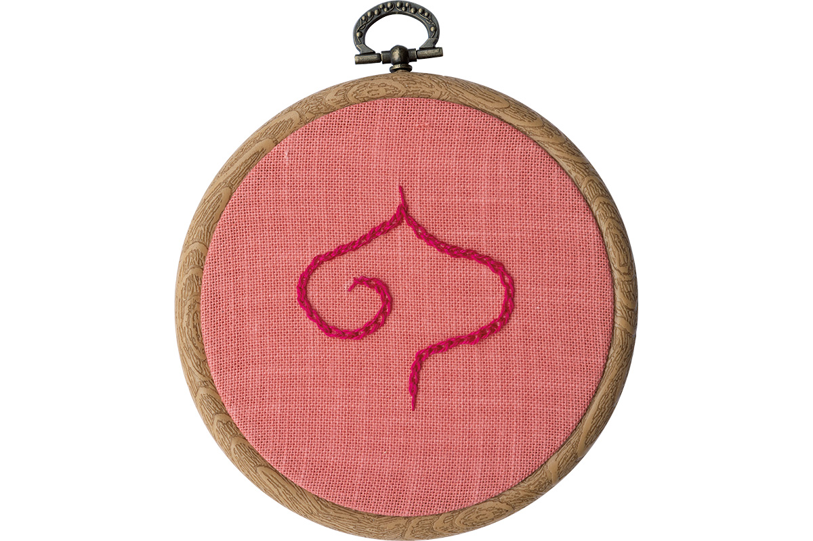
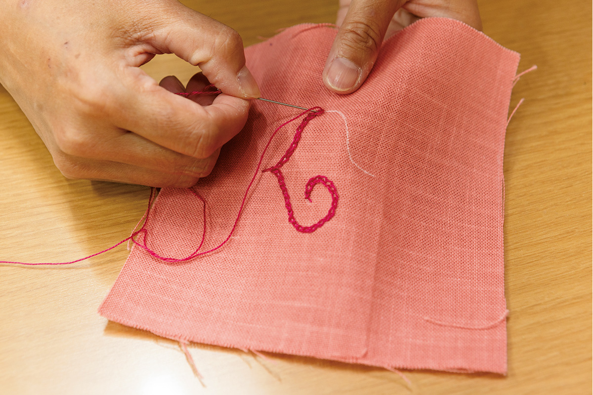
Кухня
Охау и блюда из сезонных продуктов
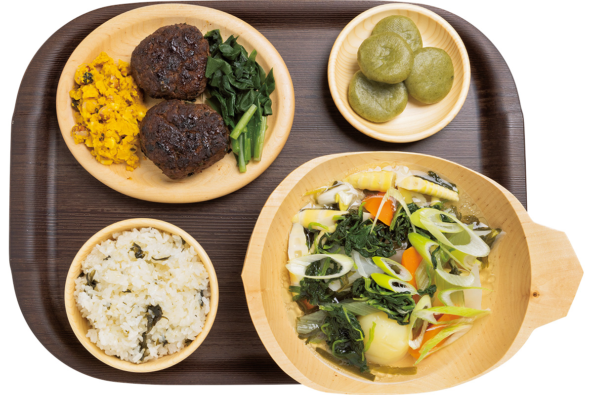
В 2022 году по выходным и праздникам в учебном центре проходила «Порото-киттин»: вместе с сотрудниками гости готовили четыре или пять айнских блюд и сразу их ели. Главным блюдом был охау, густой суп с множеством ингредиентов, а все рецепты из сезонных продуктов давали с собой, чтобы повторить дома. Занятие длилось около трёх часов и стоило 1500 иен. В 2026 году в программе центра есть «Пон-киттин», знакомство с айнской едой с готовкой или дегустацией, и «Ипэан ро!», где пробуют охау, а с апреля 2026 года охау и блюда из дичи подают в ресторане «Умисора-но хару» на территории центра.
Магазин
Книги и вещи с айнским узором
В здании музея есть открытая библиотека книг об айнской культуре и истории и музейный магазин, где продают и вещи на каждый день, и работы мастеров.
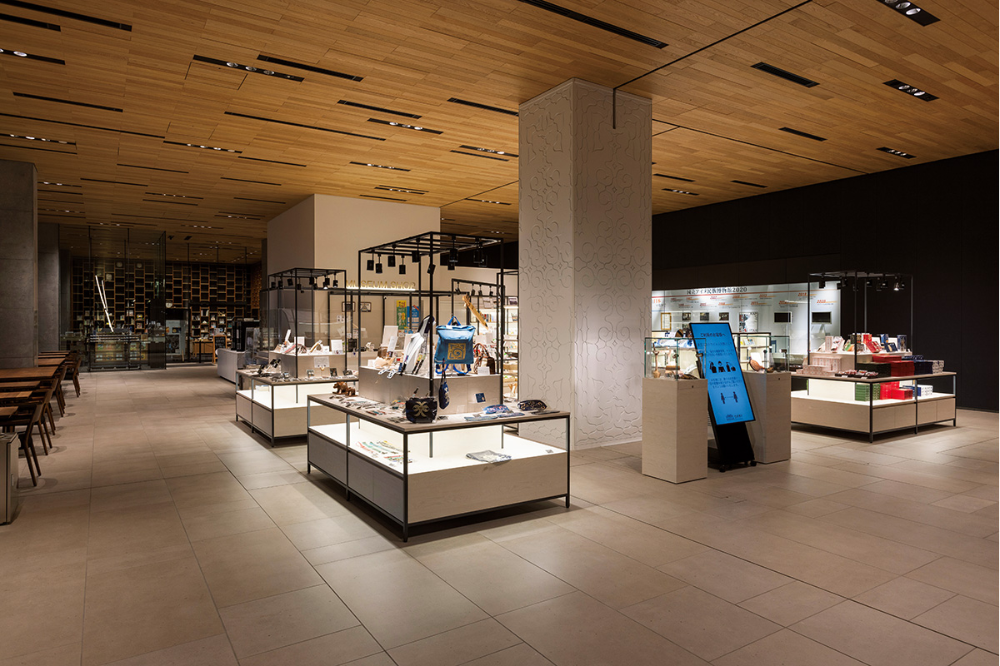
Посмотрев только музей, уезжать жалко: культура айнов лучше всего понимается руками.
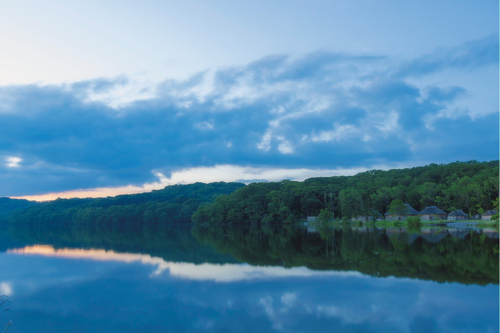
Упопой (Национальный центр символа этнической гармонии)
- Адрес
- префектура Хоккайдо, уезд Сираой, Сираой, Вакакуса-тё, 2-3
- Телефон
- +81 144-82-3914
- Часы работы
- 9:00–18:00, в субботу, воскресенье и праздники 9:00–20:00; с 16 июля по 28 августа 9:00–20:00, с 1 ноября по 31 марта 9:00–17:00
- Выходные
- понедельник (если праздник, то следующий день)
- Цены / Вход
- 1200 иен, старшеклассники 600 иен, младше бесплатно; годовой абонемент 2000 иен, для старшеклассников 1000 иен
- Как добраться
- от станции Сираой 10 минут пешком; до станции около 40 минут от аэропорта Нью-Титосэ и около 65 минут от Саппоро; на машине около 40 минут от развязки у аэропорта Нью-Титосэ
Рядом на берегу озера Порото стоит онсэн-рёкан KAI Poroto. Об айнской деревне у озера Акан на востоке острова мы рассказываем в статье «Айнская деревня Акан-ко».
Фото: Хироюки Кудо, Фонд айнской культуры.